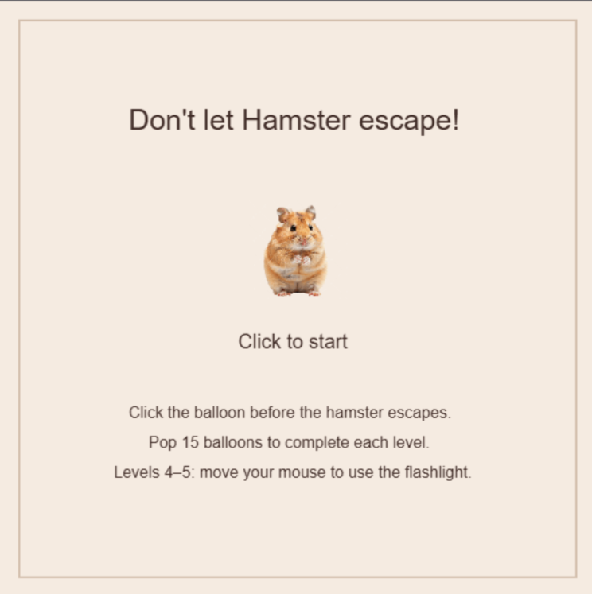

By Elizabet Gubert | A p5.js game
A hamster has a plan: escape by floating away on balloons. Your job is to pop them before he disappears above the screen.
Play the gameClick the balloon to pop it. Pop 15 balloons in each of the five levels. If the hamster escapes, you start again. In levels 4 and 5, move your mouse to use the flashlight and find him in the dark.
I made this game using p5.js in Processing. The idea is that a hamster keeps trying to escape with a balloon, and you have to stop him. I started with the chase game from class and added five levels, random balloon colors, and a nighttime part with a flashlight. I used three PNG images: the hamster as the main character, a moon before the nighttime levels, and confetti on the winning screen.
Clicking a balloon makes it pop, but the hamster immediately appears with another one somewhere else. These random positions keep the player looking around, while the increasing speed gives them less time to react. In the last two levels, the player has to move the flashlight to find him in the dark, so it becomes about searching as well as clicking quickly.
I liked the idea of a cute hamster who just won’t stay home. The colorful balloons and warm background make it look friendly, even when keeping up with him gets stressful. The night levels make it seem like he waited until it was dark to try again. I wanted the player to find that funny but still want to catch him and finish the game.